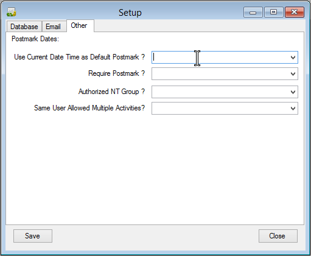

Other
Here are the other miscelanious settings.

These settings allow the user to change the default behavior
of the application.
- Use Current Date Time as Default Postmark: When a user is entering a new payment, if this setting is "Yes",
the current date and time is used to load the Postmark Date. If the setting is "No", then the Postmark Date
remains blank.
- Require Postmark: If this setting is "Yes", the user will be required to enter a postmark date prior to
saving a payment record.
- Authorized NT Group: This will likely be entered by IT Staff. In order to operate this application, the
user needs to be part of the domain administrator group, or a member of the NT group specified in this
setting.
- Same User Allowed Multiple Activities: (Not Implemented at this time)